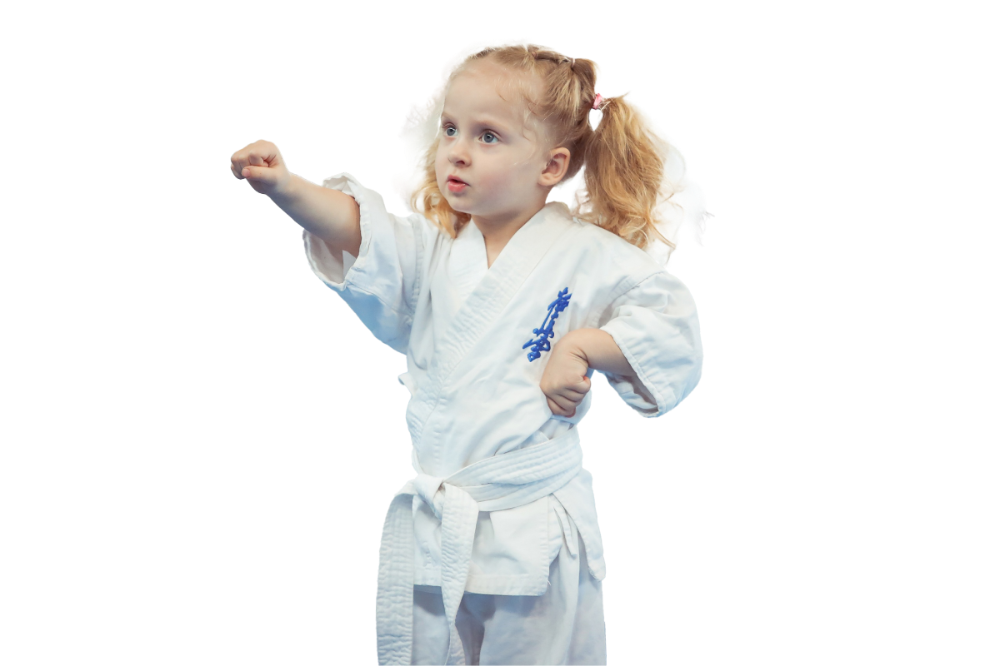
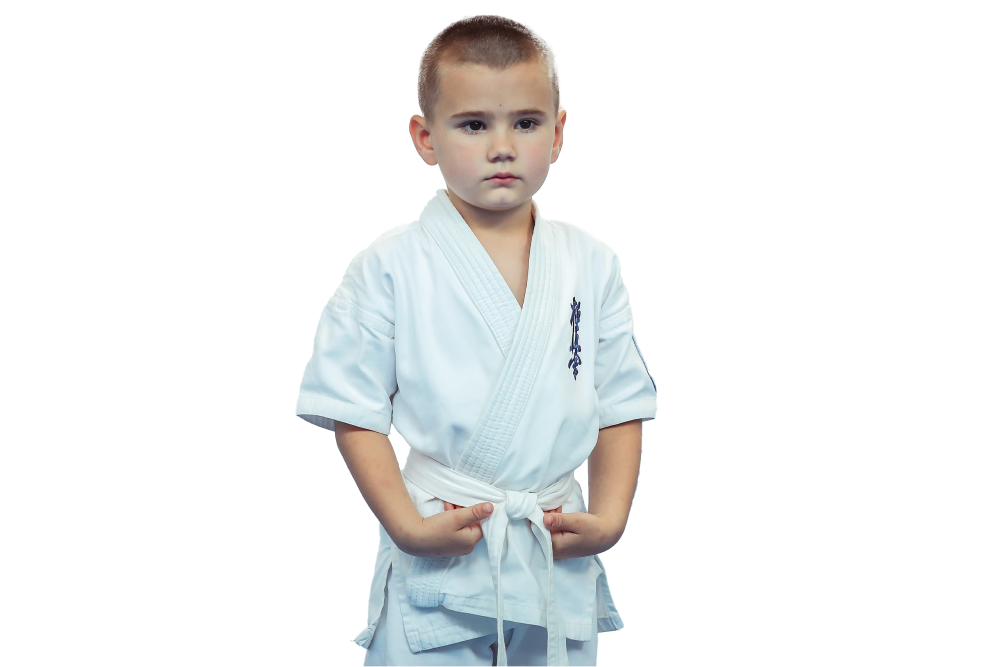
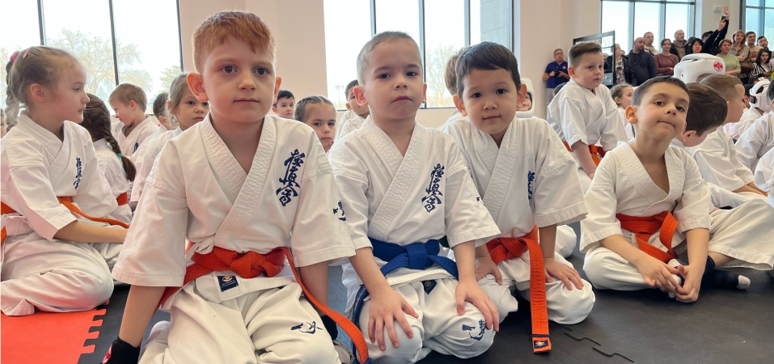
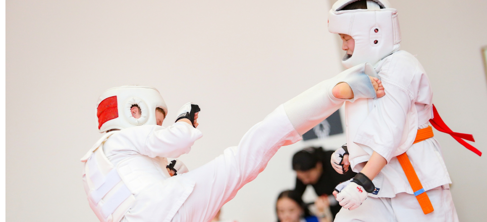
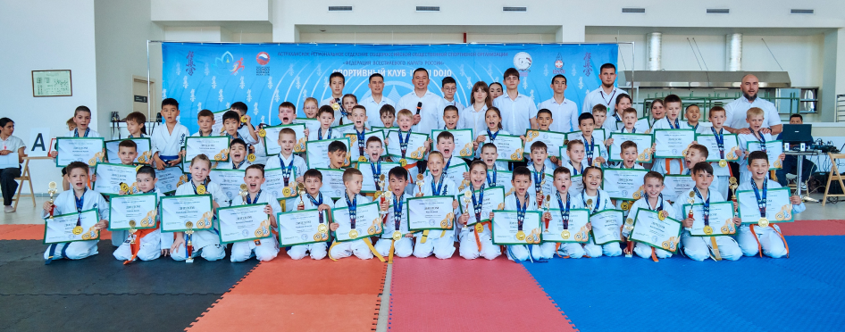

Каратэ и рукопашный бой в Астрахани - это школа боевых искусств,
ориентированная на семью, которая помогает детям и взрослым стать лучшей
версией самих себя. Мы предлагаем занятия для всех возрастов, начиная с 4
лет. Наши занятия, ориентированные на жизненные навыки, помогают детям не
только научиться защищаться, но и стать уверенными, счастливыми и
дисциплинированными. Наши школы боевых искусств для взрослых помогают
мужчинам и женщинам снять стресс, сбросить лишние килограммы и весело
провести время с единомышленниками. Приходите на наши занятия уже сегодня!
Астрахань,
🔻"Центр зимних видов спорта", ул. Анатолия Сергеева, д.26
🔻ул.Бэра, 28 "А"
🔻СЗ "АРЕНА", ул.Чкалова,85
🔻ул.5-я Керченская,19 "А"
🔻ул. Ширяева, 3 "Л"
🔻ул.Бориса Алексеева, 65 "А"
🔻ул. Яблочкова, 17 "В"
Мы в Telegram: https:/ /t.me/smk_isamidojo
+7 (967) 336-50-31
@smk_isami_dojo
Посмотреть расписание и цены


Подарите своим детям подарки на всю жизнь с помощью детских боевых
искусств: личного успеха, уверенности, дисциплины и самообороны.
Откройте для себя преимущества детских занятий боевыми искусствами: самооборона, сила, физическая подготовка, безопасность и многое другое!
Откройте для себя преимущества детских занятий боевыми искусствами: самооборона, сила, физическая подготовка, безопасность и многое другое!
ЭКСКЛЮЗИВНОЕ ПРЕДЛОЖЕНИЕ ОНЛАЙН
ОЗНАКОМЬТЕСЬ С НАШИМ РАСПИСАНИЕМ И ВАРИАНТАМИ ЦЕН
ОЗНАКОМЬТЕСЬ С НАШИМ РАСПИСАНИЕМ И ВАРИАНТАМИ ЦЕН

Адрес электронной почты для получения дополнительной информации*
Номер мобильного телефона для получения информации текстовым сообщением
СМОТРИТЕ РАСПИСАНИЕ ЗАНЯТИЙ И ЦЕНЫ ПРЯМО СЕЙЧАС
ПРЕОДОЛЕНИЕ ТРУДНОСТЕЙ ВОСПИТАНИЯ ДЕТЕЙ
Раскройте потенциал вашего ребенка с помощью занятий боевыми искусствами – безопасного, естественного и вдохновляющего способа привить самодисциплину, уверенность и уважение. Помимо физических приемов, боевые искусства воспитывают смирение, способствуют развитию физической формы и готовят детей к жизненным испытаниям.
Станьте свидетелем замечательной трансформации по мере того, как ваш ребенок растет как мастер боевых искусств и как личность, приобретая ценные навыки, необходимые для успеха на всю жизнь. Примите чудеса боевых искусств и наблюдайте, как ваш ребенок преуспевает в этом вдохновляющем путешествии.

Раскройте потенциал вашего ребенка с помощью занятий боевыми искусствами – безопасного, естественного и вдохновляющего способа привить самодисциплину, уверенность и уважение. Помимо физических приемов, боевые искусства воспитывают смирение, способствуют развитию физической формы и готовят детей к жизненным испытаниям.
Станьте свидетелем замечательной трансформации по мере того, как ваш ребенок растет как мастер боевых искусств и как личность, приобретая ценные навыки, необходимые для успеха на всю жизнь. Примите чудеса боевых искусств и наблюдайте, как ваш ребенок преуспевает в этом вдохновляющем путешествии.
НАБЛЮДАЙТЕ, КАК ВАШ РЕБЕНОК ПРЕУСПЕВАЕТ НА КАЖДОМ ЗАНЯТИИ!
Дети, как губки, быстро впитывают знания, особенно при изучении боевых искусств. Даже после одного занятия родители часто замечают положительные изменения в своих детях. С каждым последующим занятием их рост и знания расширяются, а также прививаются такие важные ценности, как самодисциплина и уважение.
Приобщение вашего ребенка к боевым искусствам выходит за рамки физического здоровья; это дает ему возможность развиваться. Станьте свидетелем их пути самосовершенствования, когда они овладевают ценными жизненными навыками и развивают сильное чувство дисциплины и уважения. Боевые искусства наделяют детей силой, направляя их на путь к полноценному и успешному будущему.
Дети, как губки, быстро впитывают знания, особенно при изучении боевых искусств. Даже после одного занятия родители часто замечают положительные изменения в своих детях. С каждым последующим занятием их рост и знания расширяются, а также прививаются такие важные ценности, как самодисциплина и уважение.
Приобщение вашего ребенка к боевым искусствам выходит за рамки физического здоровья; это дает ему возможность развиваться. Станьте свидетелем их пути самосовершенствования, когда они овладевают ценными жизненными навыками и развивают сильное чувство дисциплины и уважения. Боевые искусства наделяют детей силой, направляя их на путь к полноценному и успешному будущему.
ХАРАКТЕР НА ВСЮ ЖИЗНЬ И ЧЕРТЫ УСПЕХА
Обычные друзья ваших детей больше не являются главной заботой, когда дело доходит до развития характера. Теперь вам нужно беспокоиться обо всех негативных и вредных влияниях, которые Интернет может привнести в жизнь ваших детей.
Истинная польза наших занятий - это характер и черты успеха, которые развиваются в результате занятий боевыми искусствами.
Благодаря изучению навыков и техник боевых искусств под руководством и вдохновением наших инструкторов и позитивному социальному взаимодействию со своими одноклассниками ваши дети разовьют целый список навыков.
Обычные друзья ваших детей больше не являются главной заботой, когда дело доходит до развития характера. Теперь вам нужно беспокоиться обо всех негативных и вредных влияниях, которые Интернет может привнести в жизнь ваших детей.
Истинная польза наших занятий - это характер и черты успеха, которые развиваются в результате занятий боевыми искусствами.
Благодаря изучению навыков и техник боевых искусств под руководством и вдохновением наших инструкторов и позитивному социальному взаимодействию со своими одноклассниками ваши дети разовьют целый список навыков.
САМООБОРОНА ОТ ХИЩНИКОВ И ХУЛИГАНОВ
Мы никогда не хотим, чтобы нашим детям приходилось использовать эти навыки в современной жизни, но каждый хороший родитель все равно хочет, чтобы их дети были в безопасности.
Вот почему наши тренинги по боевым искусствам очень серьезно относятся к обучению ваших детей навыкам, необходимым для самозащиты в любых обстоятельствах, от соседского хулигана до незнакомца на улице (и многому другому).
Но знать, как защитить себя, - это только полдела. Наши занятия научат вашего ребенка уважению и самодисциплине, необходимым для разрешения ситуации без насилия– когда это возможно, а также знанию того, как понимать, когда сила - единственный путь к безопасности.


Мы никогда не хотим, чтобы нашим детям приходилось использовать эти навыки в современной жизни, но каждый хороший родитель все равно хочет, чтобы их дети были в безопасности.
Вот почему наши тренинги по боевым искусствам очень серьезно относятся к обучению ваших детей навыкам, необходимым для самозащиты в любых обстоятельствах, от соседского хулигана до незнакомца на улице (и многому другому).
Но знать, как защитить себя, - это только полдела. Наши занятия научат вашего ребенка уважению и самодисциплине, необходимым для разрешения ситуации без насилия– когда это возможно, а также знанию того, как понимать, когда сила - единственный путь к безопасности.